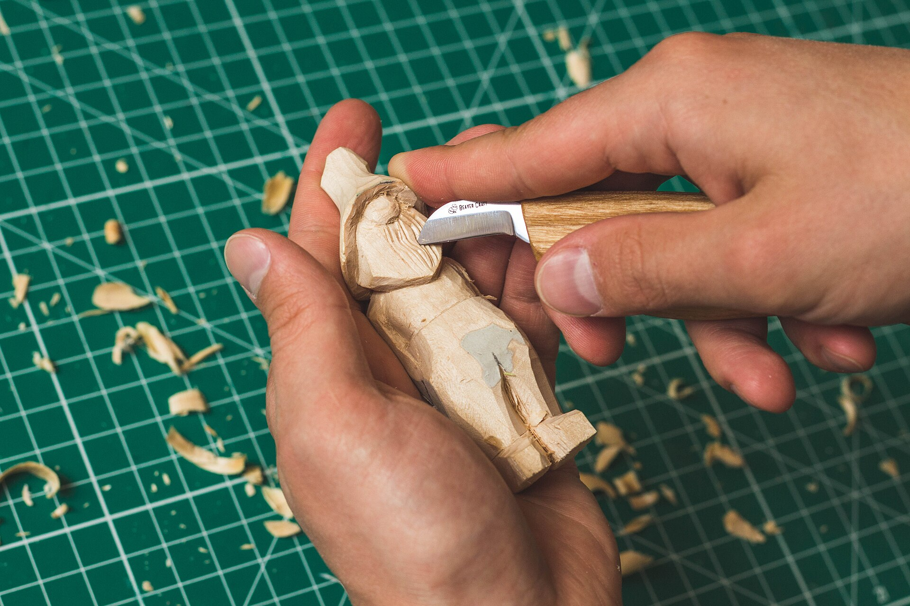
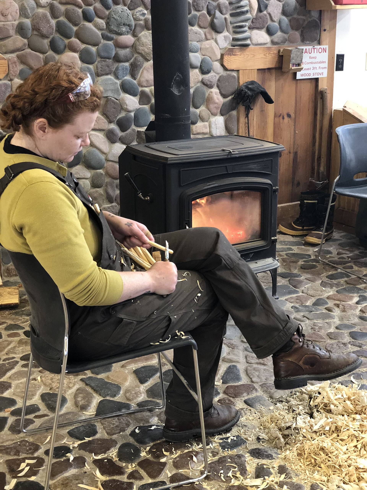

The Whittling Hour
2026-07-08
There is an hour in the late afternoon, after the day's errands are done and before dinner needs starting, when the light goes long and gold across the back step. That is the whittling hour. I did not plan it. Nobody schedules a thing like this; it grows the way ivy grows, a little at a time, until one day you look up and realise the house would feel wrong without it. There is a cushion on the step that lives there now, and a small wooden box with my knives in it, and a broom kept by the door for the shavings — because the shavings, as anyone who carves will tell you, get everywhere, and they are the tax you pay for the pleasure.
It started with a stick. That is not a figure of speech. Last spring, clearing the yard after a storm, I picked up a fallen branch that had a pleasing bend in it, and instead of tossing it on the brush pile I sat down and began peeling the bark with my pocketknife, the way I had watched my grandfather do on his porch when I was small enough to sit at his feet. He carved the way other men read the newspaper — daily, unhurriedly, and mostly as an excuse to be exactly where he was. By the time the branch was smooth I understood him better than I had in years. The stick became a letter opener. The letter opener became a spoon. The spoon, I will admit, was not entirely level. But it was mine, and it held soup, and that was enough to keep going.

Photo: Wikimedia Commons
A knife, a thumb, and basswood
The craft, such as I practise it, asks for very little. A good carving knife with a short blade. A strop to keep the edge keen, because a dull knife is the only dangerous kind — it makes you push, and pushing is when slips happen. A thumb guard, worn without embarrassment. And wood, which turns out to matter more than any of the tools. I began with whatever the yard offered, which taught me quickly that some wood invites carving and some wood files a formal complaint. Pine gouges and tears if you look at it wrong. Oak fights you the whole way and keeps the score.
Basswood is the great friend of beginners. It is soft, pale, even-grained, and forgiving of the carver who changes their mind mid-cut, which I do constantly. I learned the basics the modern way, working through step-by-step carving projects on quiet evenings until the cuts stopped being guesses — push cuts away from the body, thumb-as-a-lever cuts for control, stop cuts to keep a line where you put it. Somewhere in there I also fell down the pleasant rabbit hole of the Arbor Day Foundation's tree profiles, learning which of the trees I walk past every day are carvers' friends and which are beautiful strangers. There is a linden on our street I now greet by name. It does not answer, but we understand each other.
What comes off the step these days is a small, growing menagerie. A fox, recognisable as a fox if you are generous and the light is kind. A wren with a tail at a jaunty angle. Three owls of increasing confidence — the first looks startled, the second looks wise, and the third, my favourite, looks like it is keeping a secret it fully intends to tell. Each one took most of a week of whittling hours. None of them would win a prize at a fair, and that is entirely beside the point. The point is the hour itself: the curl of a shaving coming off the blade, the smell of fresh-cut wood, the way the mind settles when the hands have a small, honest job.
What the hour is really for
My neighbour asked me once, not unkindly, whether I could not simply buy a carved fox, a better one, at the craft store in town. Of course I could. I could buy a better spoon than my spoon, too, and a better letter opener, and none of them would do the thing the whittling hour does, which is slow the day down to the speed of a knife through basswood. In that hour there is no news. There is no list. There is only the next cut, and then the next, and the figure deciding — carvers say this and it sounds like a joke until you have done it — what it wants to be. You find the fox by removing everything that is not the fox. It takes as long as it takes.
The hour has become social in the way of good habits. My neighbour, the one with the craft-store question, now pulls up the spare chair some evenings with her mending, and we sit in companionable near-silence, each working at our own small thing. My grandson, visiting in June, carved his first figure under strict supervision: a fish, or possibly a leaf, about which he remains deliberately mysterious. He worked at it with his whole face in a frown of concentration, tongue at the corner of his mouth, exactly as I must have looked at my grandfather's feet. Some things are inherited without anyone signing a paper.

Photo: Wikimedia Commons
The finished pieces live on the kitchen windowsill, in a row, where the morning light gets them. The startled owl, the wise owl, the secret-keeping owl. The wren. The fox. The fish-or-leaf, in the place of honour at the end, because its carver is nine and already understands what took me decades: that the object is not the achievement. The hour is.
Soon the evenings will shorten and the whittling hour will move — there is a chair in the garage by the window that will do, and a lamp, and the same wooden box of knives. The season does not matter much. What matters is that there is a time of day when the world narrows to a step, a cushion, a piece of pale wood, and a blade kept sharp — and that inside that narrow, quiet hour, there is room for just about everything.